How to Operate Air Compressor
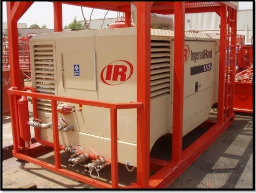
1- Compressor (startup / shutdown) procedure: :-
-
Startup procedure:
- Walk aound the compresor to make sure everything is safe
- open all the compressor doors
- Visually check for (loose fitting, worn hoses, fan belts, water leaking, oil leakingm etc...)
- preparing the compressor for operation
- check oil level for engine and compressor
- check the battery connection and condition
- check the fuel level
- Check Cooling water
- Battery switch on
- Go to operation control panel
- Move the ignition switch to position one
- wait for few seconds (5-10 sec)
- Moave the ignition switch to startup position and hold for few seconds for engine start up
- Wait (5 minutes) for engine warm up
- Load the compressor (push load button) and check the compressor pressure (8 Bar)
- Wait (3 minutes) and make sure the connection are safe and then gradually open the main air valve to scrubber and to instruments or to green burner for atomizing flaring
-
Shutdown procedure:
- Close air discharge valve
- Role the ignition switch to position one, and wait for few minutes to remove the air pressure
- Role the ignition switch to OFF position
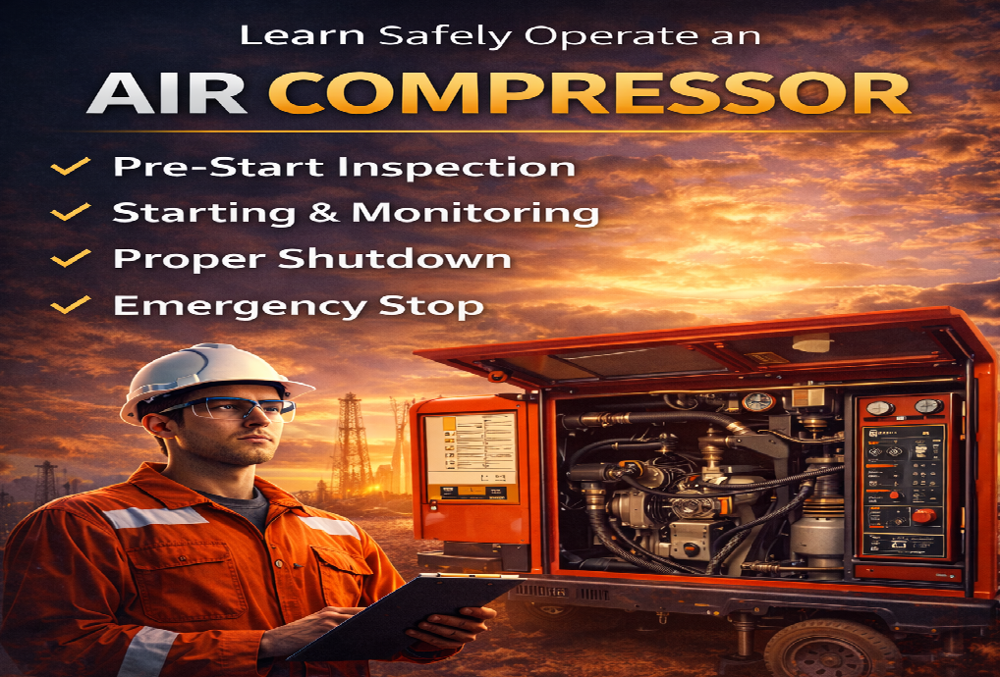
2- Compressor Checks
-
Safety Clips/whip check on Air Rubber Hoses:
Supplied air rubber hoses must be fitted with a safety protection devices to prevent hose slips or disconnect in order to protect personnel from injury of hose whiplash. Accordingly, it is an accepted safety practice to utilize safety clips or whip check or equivalent for all sizes of air hoses namely (3/8”, 1/2”, ¾”, 1” and 2”) whenever connected to air compressor or air supply connections.
-
Checks Prior Starting Diesel Engine of Air Compressor:
- Place the air compressor skid unit in a properly leveled position
- keep air compressor in a safe distance from green burner flare pit and flare lines
- Daily check heat radiator water cooling system (100% fulll) with approved coolant fluid. Check Density / Sprecific Gravity prior top (66.8 PCF or 1.07 repectively)
- Daily check engine oil level by the provided manufacturer stick.
- Daily Check compressor oil level in the sight glass located on the separator tank
- Open the service valve to ensure that all pressure is released from the system
- Ensure to close the service valve (prior start up).
- Safely drain water from fuel filter/separator, ensuring that any released fuel is safely contained.
- Pump up fuel to the fuel filter if engine provided with pump, or utilized external fuel hand pump
- Check diesel fuel level (90% full), or top up at the end of each working day, to prevent condensation from occurring in the tank.
- However, it is advisable to switch off engine while refueling
- Check battery condition and switch on the safety isolation switch.
- Ensure that both doors are closed on compressor enclosure, for safety reasons. CAUTION: Do not operate the machine with the doors in the open position as this may cause overheating and operators to be exposed to high noise levels.
-
Whenever Re-Fueling:
- Close air supply main valve.
- Switch off the diesel engine.
- Smoking NOT allowed
- Keep fire extinguishers (Dry powder & Foam).
- Do not allow the fuel to come into contact with hot surfaces.
- Wear personal protective equipment (PPE)
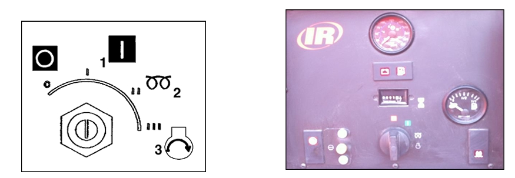
Ingersoll rand air compressor
-
Starting Engine:-
All normal starting functions are incorporated in the key operated switch at compressor panel
- Turn the key switch to position (1), to activate control panel
- Observe all indicators and lights as applicable
- Turn the key switch to position (2) as it is used only when grid heater option is installed
- Turn the key switch to crank position (3), and hear engine start position
- Release hand from the key switch, as the engine starts on idle position
- Key switch will be automatically released to position (1) when engine starts. The engine will now be running at a reduced speed.
- Allow the engine to warm up for several minutes
- Now, press the service air switch in the instrumentation panel
- When engine is running at full load, check air filter restriction gauges showing less than 30”, if not then air filter element service or replacement is required
-
Stop the Engine:-
- Close the service valve
- Allow the engine to run idle/ without load for a short time period (5-10minutes) to reduce the engine temperature.
- Turn off the start key switch position (O)
-
Emeregency shutdown Engine:-
In the event that the unit is to be stopped in an emergency, turn the key switch located on the instrument panel to off position (o), or push the emergency red stop switch located at outer closure.
-
Re-Starting Engine Post Emergency Shutdown:-
If the engine is been switched off, because of a machine malfunction, then identify and correct the fault before attempting to re-start (check instrument panel for any indications).
If the engine has been switched off for safety reasons, then ensure that the engine can be operated safely before re-starting.
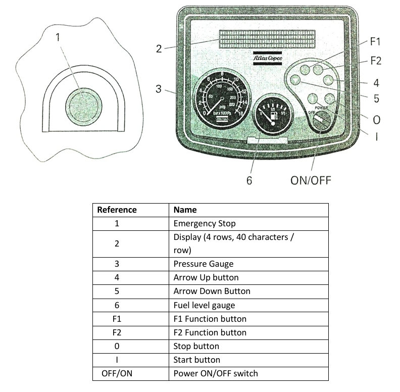
Atlas Copco Air Compressors
-
Control Panel
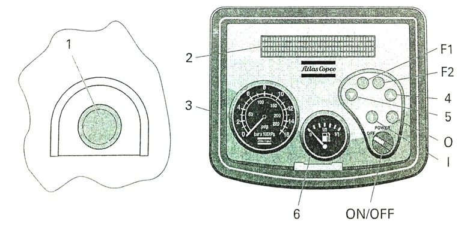
References Name 1 Emergency shutdown 2 Display (4 rows, 40 characters / row) 3 Pressure Gauge 4 Arrow Up button 5 Arrow Down Button 6 Fuel level gauge F1 F1 Function button F2 F2 Function button O Stop button I Start button OFF/ON Power ON/OFF switch -
Specific Starting Procedure:-
Follow this start procedure when the compressor is put in operation for the first time , after running out of fuel or changing the fuel filter.
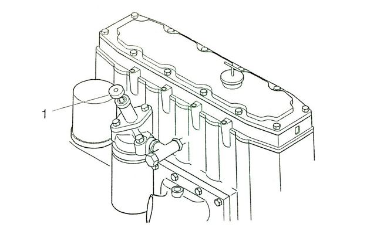
- Operate the Hand pump (1) at the pre-filter until it is under pressure.
- Switch the OFF/ON switch to position ON. The instrument panel will now perform a brief self-test.
- Push the start button and the starter motor will automatically cranking, try to start the engine
- Run the engine for a few minutes at idle/no-load to warm up. NOTE: After cleaning/draining the fuel tanks, the system is filled with air. Before starting the engine operate the fuel pump on the fuel filter to fill the fuel system. Operate the pump (1) until the system is under pressure. When under pressure the engine will start after approximately 10 seconds. If the system is not under pressure, it will take few minutes until the engine will start.
-
Power On/Off :-
Switch the engine on by switching the “OFF/ON” switch to the position “ON”. The instrument control panel will now perform a brief self-test, The display will show:
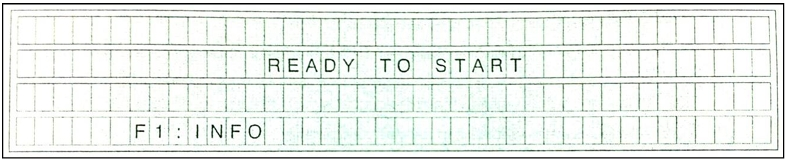
By pressing “F1”, the user goes to INFO status.When disconnecting power supply (Switching OFF) the User will be prompted to this by next display.
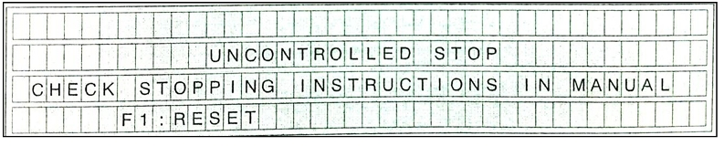
-
Starting:-
Press the button “I”. During the starting procedure the display will show:
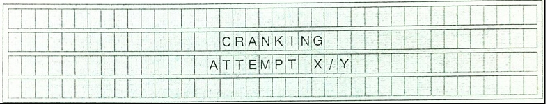
Subsequently the system will automatically make 5 attempts to start the engine. The attempt will be indicated on the display as: ‘1/5’ first attempt of 5, ‘2/5’ second attempt of 5, etc.
CAUTION: To cool the starting motor, the system will wait 1 minute before undertaking the next attempt, meanwhile do not leave the compressor. Press the button “0” to prevent the system from undertaking any starting attempts after the first or second starting attempt.If the engine failed to start after 5 attempts the display will show:
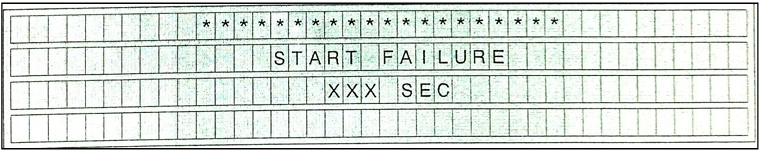
When the stopping procedure has ended, the time message disappears and F1 function appears (Reset). The display will show:
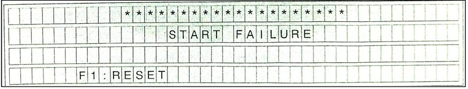
-
Warm Up
When the engine starts up, the control box executes the following Warm-Up procedure checks and engine keeps running at Minimum RPM, until the Coolant Water Temperature has reached the Warm-up Temperature setting (40O / 104O F). Display will show:
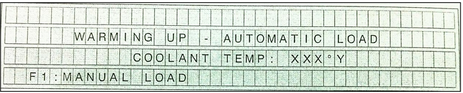
If the Warm-up Temperature has not been reached after 5 minutes, the Warm-up procedure will be ended, and the Control Box will proceed to Idle/NO LOADED status -
Loading
By pressing button “F1” the compressor will be loaded. The pressure will rise till it reaches the setting
CAUTION: The setting of the regulating valve with shut off valves should be 2 bar (29 psi) higher than the required working pressure.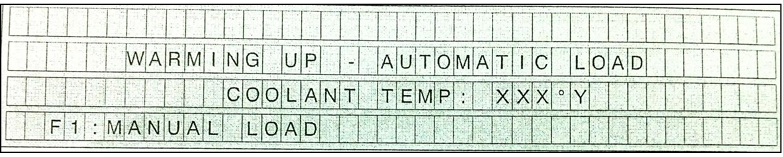
- The engine rpm is shown on the display.
- The status is indicated as UNLOAD when the valves are shut off.
- The status is indicated as LOAD when the valves are OPEN.
(Failed to Load) The Display will show:
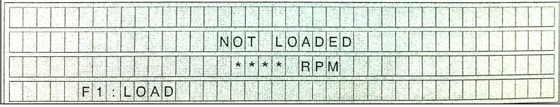
-
Stopping
- To turn off the compressor first press the button “0”
- The engine will run for some time at minimum speed to cool down and will stop finally
- The remaining time (Count down) is shown in the display:
- Meanwhile the air receiver is depressurized
- Switch the “OFF / ON” Key to the position “OFF” CAUTION: Do not push Emergency stop during cool down process.
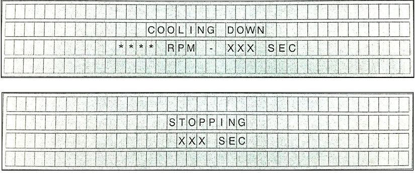
-
Emergency Stop
When emergency stop button is pressed, power to all outputs is terminated, by the emergency stop itself (hardware) as well as by the software. The display will show:
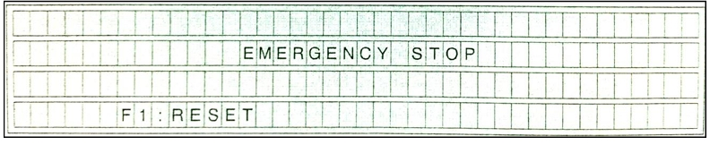
When the emergency stop button is unlocked the operator can reset the emergency stop by pressing “F1”. . The display will show:
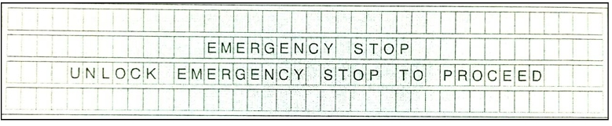
Air Compressor Summary:-
-
Pre-Operational Checks & Safety
Before starting any machinery, operators must perform a "walk-around" inspection to ensure safety and equipment integrity.
- Fluid Levels: Check engine oil, compressor oil (via sight glass), and fuel levels (maintain at 90% to prevent condensation).
- Cooling System: Verify coolant density/specific gravity ($1.07$ or $66.8\text{ PCF}$) and ensure the radiator is 100% full.
- Mechanical Integrity: Inspect for loose fittings, worn belts, and leaks.
- Safety Gear: Ensure "whip checks" or safety clips are installed on all air rubber hoses to prevent injury in case of a hose disconnect.
- Battery: Check connections and turn the battery isolation switch to "ON."
-
Operating the Ingersoll Rand Compressor
The procedure relies on a multi-position key switch:
-
Startup:
- Turn key to Position 1 (Activate control panel).
- Use Position 2 for the grid heater (if cold).
- Turn to Position 3 to crank. Release once the engine starts.
- Warm up for 5 minutes before pressing the service air switch to load.
- Shutdown:
Close the service valve, let the engine idle for 5–10 minutes to cool, then turn the key to Position 0.
-
Startup:
-
Operating the Atlas Copco Compressor
This unit features a digital control panel with specific function buttons (F1, F2) and an automated start sequence.
- Initial Start/Priming: If the unit is new or ran out of fuel, you must manually operate the hand pump until the system is under pressure before starting.
-
Control Panel Logic:
- Power On: Displays "READY TO START."
- Starting: Press the "I" button. The system automatically attempts to crank up to 5 times.
- Loading: Once warmed up (reaching 40 ° or 104°F), press F1 to load the compressor.
- Shutdown: Press the "0" button. The display will show a "COOLING DOWN" countdown before the engine stops completely.
-
Emergency Procedures
- Emergency Stop: Pressing the red mushroom button kills all power immediately (hardware and software).
- Recovery: To restart after an emergency, you must first manually unlock the emergency button, then press F1 on the panel to reset the software lock before the engine can be cranked again.
This course provides a comprehensive guide to the Startup, Operation, and Shutdown procedures for industrial air compressors, specifically focusing on Ingersoll Rand and Atlas Copco models used in well-testing environments.
The training is divided into four primary modules:
Summary Table: Key Operational Specs
| Parameter | Value / Action |
|---|---|
| Warm-up Time | 3–5 minutes |
| Cool-down Time | 5–10 minutes |
| Fuel Level | Keep at 90% to avoid condensation |
| Loading Pressure | Regulating valve set 2 bar (29 psi) above working pressure |
| Safety Device | Whip checks on all hose connections |
Quiz
course Exam
✅ Important Notes Before You Start the Exam
📌 Please read these carefully before pressing the “Start Exam” button:- 🧘♂️ Take a deep breath and stay calm – This exam is about understanding, not just memorizing.
- ⏰ Make sure you're in a quiet, distraction-free space – Turn off notifications and focus.
- 🔌 Ensure a stable internet connection – Losing connection may end your exam session.
- 📝 Have everything you need ready – Paper, pen, calculator (if allowed), or any permitted tools.
- 🚫 No cheating or switching tabs – Some exams monitor your activity for fairness.
- 🧠 Read each question carefully – Don’t rush. Understand before you answer.
- 🎯 Only click the button when you're 100% ready – The exam timer will start immediately.
⚠️ Note:
Leaving the page or refreshing the browser may result in automatic submission or loss of progress.🚀 Ready to begin?
Click the button below to start your exam. Good luck! 💪